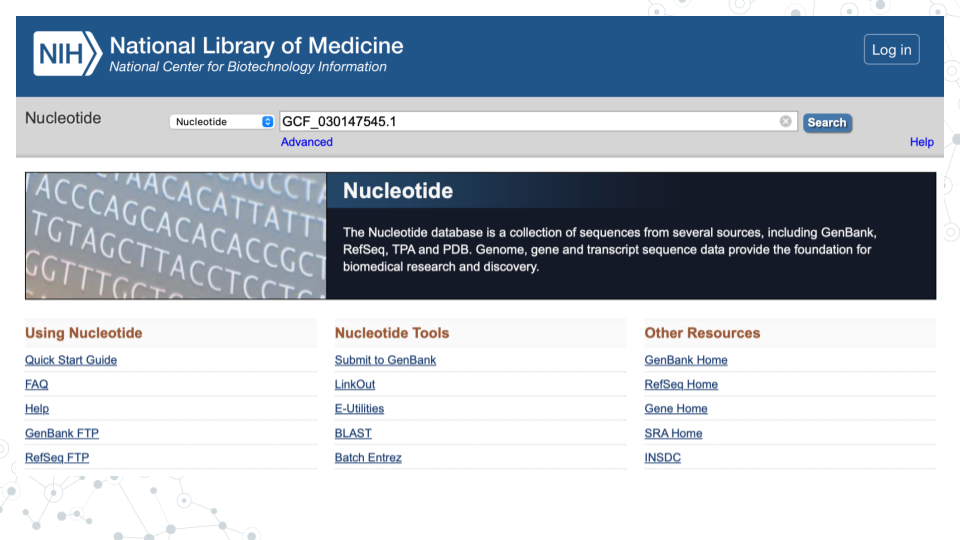
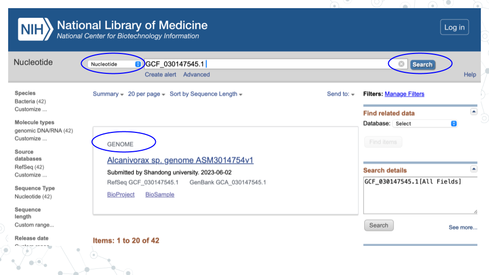
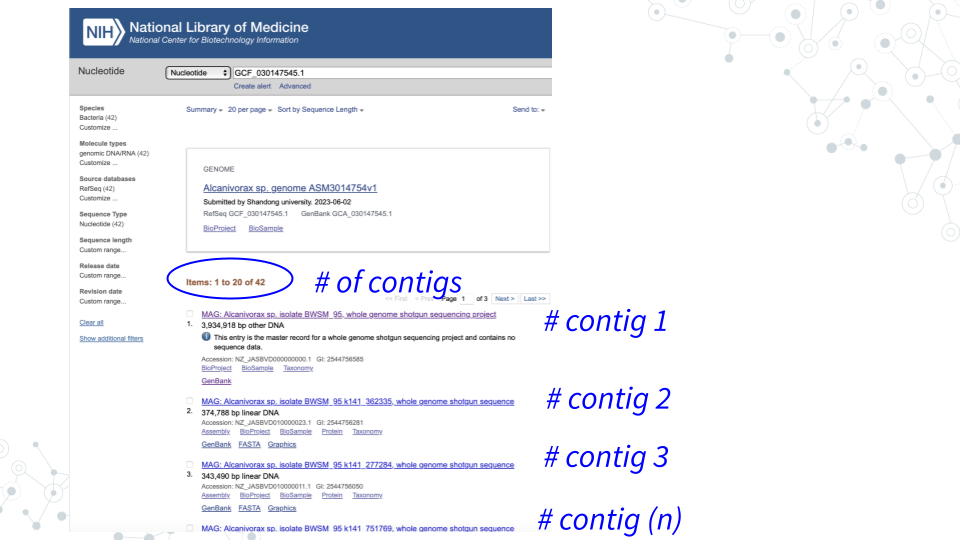
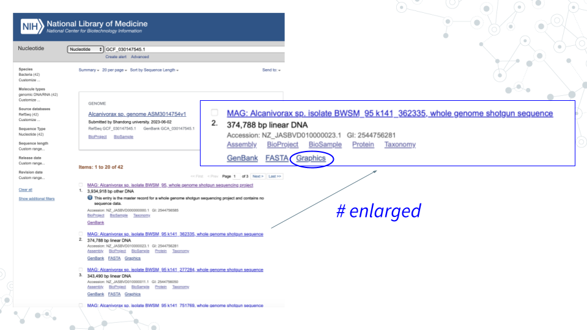
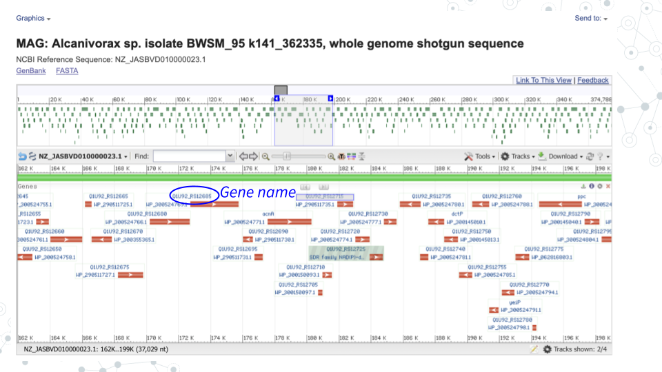

3.4 Project - Microbial Genomes
3.4.1 Purpose
Explore information about new bacterial MAGs from Zue Z et al, Nature Scientific Data 2023 https://pubmed.ncbi.nlm.nih.gov/37563185/.
3.4.2 Learning Objectives
- Explore and better understand MAGs and contigs by following up one MAG and one contig in NCBI.
- Utilize knowledge learned by navigating MAG information using previously learned tools such as GenBank, Sequence Browser, BV-BRC, Taxonomy Browser and Lifemap.
- Go deeper and see what you can find on the organism from your MAG of choice and a gene from a MAG of choice using any tools available to you (Pubmed, Google, BV-BRC, other databases).
3.4.3 Activity 1 – MAGs and Taxonomy
Estimated time: [40] min
3.4.3.2 Instructions
- In the research study by Zue Z et al, Nature Scientific Data 2023 https://pubmed.ncbi.nlm.nih.gov/37563185/, 17 of 103 uncovered MAGs from ballast water or sediment were of very high quality and completeness. You will follow up on one of them!
- Choose one of these 17 MAGs (see 17 GenBank IDs below) to follow up in this activity.
- Use GenBank https://www.ncbi.nlm.nih.gov/nucleotide/ to answer questions.
| GenBank IDs for 17 quality MAGs |
|---|
| 1. GCF_030147545.1 |
| 2. GCF_030148435.1 |
| 3. GCF_030149225.1 |
| 4. GCF_030148195.1 |
| 5. GCF_030148855.1 |
| 6. GCF_030148245.1 |
| 7. GCF_030149045.1 |
| 8. GCF_030148385.1 |
| 9. GCF_030147715.1 |
| 10. GCF_030149085.1 |
| 11. GCF_030149145.1 |
| 12. GCF_030148125.1 |
| 13. GCF_030149425.1 |
| 14. GCF_030149235.1 |
| 15. GCF_030148515.1 |
| 16. GCF_030147875.1 |
| 17. GCF_030149465.1 |
3.4.3.3 Questions
| 1. Record the GenBank ID number for one of 17 high quality MAGs for follow up below. |
|---|
In the GenBank https://www.ncbi.nlm.nih.gov/nucleotide/, under the Nucleotide search tab enter the GenBank number of your MAG (e.g. GCF_030147545.1) and click Search.

| 2. Record below the GENOME name for the MAG assembly associated with the GenBank ID you entered. |
|---|
For the 1st MAG (GCF_030147545.1), the GENOME name is “Alcanivorax sp. genome ASM3014754v1”:

Click on the GENOME name of your MAG to explore genome assembly summary information.
| 3. What is the Taxon of your MAG? |
|---|
| 4. What is the genome size of your MAG? |
|---|
| 5. How many contigs contributed to your MAG assembly? |
|---|
| 6. How many genes were annotated? |
|---|
| 7. How comparable is your MAG genome to the E. coli genome from the microbial-genomes-pre-lab, in terms of genome size and number of genes? |
|---|
| 8. As you can see, MAGs are made up of Contigs. Based on your lecture and reading material, and this exercise, in your own words define MAGs and Contigs below. |
|---|
| MAGs: |
| Contigs: |
3.4.3.5 Instructions
- MAGs are made up of Contigs. To see which contigs make up your MAG, go back to GenBank https://www.ncbi.nlm.nih.gov/nucleotide/, and search for your MAG using its GenBank ID (e.g.GCF_030147545.1).
- You will see that MAG GCF_030147545.1 is composed of 42 contigs:

| 1. Each contig has its own accession number. Choose a contig of reasonably large size (> 75 kb), click on the contig, then find and record below the Contig’s ID (Accession number/GenBank ID) for further examination. |
|---|
| Tip: You can sort the entries by length via’ Sort by Sequence Length’ on top! |
For the contig you chose in activity above, under Related Information on the right, click on Taxonomy and then click again on the provided link.
Find Lineage information. Full Lineage information contains 7 core taxonomy ranks: Kingdom, Phylum, Class, Order, Family, Genus and Species, plus any additional classification ranks. To just get the 7 core lineage names, click on Lineage link for the abbreviated Lineage, or, simply hover over lineage names.
| 2. Record 7 core taxonomy ranks for your Contig. | |
|---|---|
| Kingdom: | |
| Phylum: | |
| Class: | |
| Order: | |
| Family: | |
| Genus: | |
| Species: | |
3.4.3.7 Introduction
Use Lifemap to visually explore the contig taxonomy in the context of the tree of life. Go to https://lifemap-ncbi.univ-lyon1.fr and enter the lowest taxonomy rank observed for your contig (most likely the species or genus level, but can also correspond to order or family).
On the tree map, use plus and minus tabs to zoom in and out and visualize your Contig entry relative to other organisms on the map. Zoom in and find nodes corresponding to the higher taxonomic ranks. For example, if your contig corresponds to genus level classification, you will not be able to identify species level information, but you will be able to identify the corresponding Family, Order, Class and Phylum.
| 1. Record 7 core taxonomy ranks for your Contig. | |
|---|---|
| Kingdom: | |
| Phylum: | |
| Class: | |
| Order: | |
| Family: | |
| Genus: | |
| Species: | |
| 2. What are some other members of the Genus to which your Contig belongs? |
|---|
| 3. What are some other members of the Family to which your Contig belongs? |
|---|
| 4. What are some other members of the Order to which your Contig belongs? |
|---|
| 5. What are some other members of the Class to which your Contig belongs? |
|---|
| 6. What are some other members of the Phylum to which your Contig belongs? |
|---|
3.4.4 Activity 2 – Genomes, Genes, and Databases
Estimated time: [20] min
3.4.4.1 Instructions
- In GenBank https://www.ncbi.nlm.nih.gov/nucleotide/, for the contig you chose in activity 1 click on Graphics to explore the genome browser and the genes.

- Select genes of interest. A lot of genes found in the Contigs will have no ‘familiar’ short symbol and instead have a long alphabetical-and-numerical- name. Such genes are either uncharacterized, hypothetical or have functional or structural similarity to known genes/proteins, but have not been confirmed. However, some Contig genes will be annotated with a ‘familiar’ short gene symbol, matching known genes. Please use the genes with the short symbols for this activity, since the ‘other’ genes will not be found in the databases.

- For the 3 genes of choice, use the BV-BRC bv-brc.org to find more information on your genes.
3.4.4.2 Questions
| **1. Record 5 genes of interest for your Contig. | |
|---|---|
| Gene1: | |
| Gene2: | |
| Gene3: | |
| Gene4: | |
| Gene5: |
For the 3 genes above, in the bv-brc.org Search space, a) from a dropdown menu select “Pathways” , b) type in the gene name and click enter. This will result in a lot of entries for different organisms. c) check one of the boxes corresponding to the gene of interest and enter below which species/strain (Genome Name) you selected.
| **2. Record Genome Name associated with your 3 genes of interest in bv-brc database. | |
|---|---|
| Gene | Genome Name |
| Gene1: | |
| Gene2: | |
| Gene3: |
| **3. Record gene Product associated with your genes of interest in bv-brc database. | |
|---|---|
| Gene | Product |
| Gene1: | |
| Gene2: | |
| Gene3: |
| **4. Record Pathway Name associated with your genes of interest in bv-brc database. | |
|---|---|
| Gene | Pathway Name |
| Gene1: | |
| Gene2: | |
| Gene3: |
3.4.5 Activity 3 – Go Deeper!
Estimated time: [30] min
3.4.5.1 Instructions
Use any tools available at your disposal to follow up on your MAG and gene of interest from activities 1 and 2 above. Some suggested tools include PubMed, Google, MBGD, BV-BRC, BacDive.
- For the taxa you identified for your chosen MAG in activity 1, what can you learn about this organism (species or genus for example) in 15 minutes using any tools at your disposal?
| **a. What did you learn? |
|---|
| **b. What tools did you use? |
|---|
- For one of the genes you identified for your chosen contig in activity 2, what can you learn about this gene in 15 minutes using any tools at your disposal?
| **a. What did you learn? |
|---|
| **b. What tools did you use? |
|---|